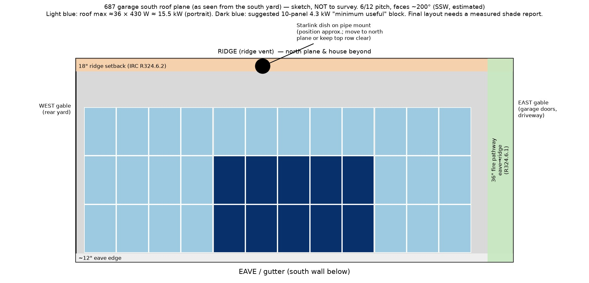

The current plan
Whole-house backup on a FranklinWH system: three aPower 2 batteries, an aGate, and a Generator Module, on the left wall of the garage. The plan adds a single emergency generator source, a Tesla Wall Connector on a load-managed circuit, and solar-ready provisions so panels can be added later. Propane heat is what makes about 45 kWh of batteries workable, because the furnace only needs its blower and controls.
About 2–3 days on batteries
About 45 kWh of storage covers essentials (well, furnace blower, fridge, lights, internet, roughly 15–20 kWh a day) for about 2½–3 days. Heavy hot-tub or EV use shortens that.
Longer outages = generator
The generator recharges the batteries and then shuts off, so it only runs a few hours at a time. In winter, solar on this lot adds little (see below), so the generator is what carries a long January outage.
Garage layout
The battery wall is on the left (south) wall of the garage, with 36 in kept clear in front and bollards. One car lift is in the right bay, and the Wall Connector is on the right bay’s front wall. See the garage v2 plan.
Planning notes only, not a bid, load calculation or engineering document. The installer finalizes the equipment, the layout and the code details.
FranklinWH battery wall
What goes on the wall
- 3 × aPower 2, about 15 kWh each, about 45 kWh total.
- aGate, the control and transfer unit. It islands the house in an outage and has the solar and generator inputs.
- Generator Module, for the one emergency generator source.
Placement
- Along the left garage wall, away from the lifting platform and the car lift.
- Keep 36 in clear in front and add bollards against car bumps.
- Leave wall space for a future solar inverter, plus a conduit stub-up from the roof (placeholders on the garage plan).
- The installer sets the exact spacing and clearances.
Generator: pick one emergency source
FranklinWH supports a single emergency power source: a standby generator, a portable generator, or vehicle-to-load. The house gets one or the other, not both.
Option 1: 240V dual-fuel portable on an outdoor inlet
- The installer suggested a 240V portable (a typical home-center dual-fuel model) plugged into an outdoor generator inlet that feeds the Generator Module. It charges about one battery per 3–4 hours, roughly 4–5 kW into the batteries.
- It must be 240V split-phase. Dual-fuel lets it run on gasoline or off the existing 500-gallon propane tank through an outdoor quick-connect.
- Manual start only: someone starts it when the batteries run low, runs it a few hours, and shuts it off. It best fits if someone is usually home during winter outages.
- Run it outdoors only, well away from doors and windows. The inlet is marked on the garage plan near the battery wall.
Option 2: optional propane standby
- A permanently installed propane standby on the existing 500-gallon tank. It sits on a pad outside the garage (an optional pad is shown on the plan).
- Starts and stops on its own based on battery charge, so it protects a vacant house in a January outage (well, heat, freeze protection), for example while you’re away with the Airstream.
- If the house will often sit empty in winter, this is the safer choice. If someone is nearly always home, the portable is reasonable.
Can the Airstream charge the batteries?
Not practically. The Airstream Interstate 24X’s built-in Onan generator is about 2.5 kW, 120V only, and runs on the coach’s own small propane tank. FranklinWH doesn’t support 120V generators, so it can’t plug into the house inlet. Stepping it up to 240V with an autotransformer isn’t FranklinWH-approved and would add only about 1–1.5 kW, so a full refill would take a day or more and several propane fills. Use the Airstream as a self-contained warm refuge in an outage, with cords to a fridge or freezer if needed, and use the house generator for the batteries. Never run the Onan inside the garage.
A lithium and solar retrofit on the Airstream is worth doing for the camper itself, but it adds only a few kWh and barely helps the house.
Tesla Wall Connector
The Wall Connector goes on the front wall of the right bay, on the pier between the center and right doors. A cable path of about 17–19 ft reaches the Model Y’s charge port when it is parked nose-in under the lift. It goes on a load-managed circuit so EV charging can’t overload the house, and charging is paused whenever the house is running on backup.
Solar-ready now, panels later
Panels may not go up right away, or may start as a small array. The cheap steps now are done during the battery install:
- Reserve the aGate solar breaker position, so a future inverter lands on the backed-up side.
- Run empty conduit from the aGate to the garage attic or roof (dashed line on the garage plan), and leave wall space for an inverter.
- Consider an aPower S in place of one aPower 2. It has a built-in solar input, so a small array could connect later without a separate inverter. Microinverters handle tree shade better, so the installer should model both.
Garage south roof: sun analysis
The roof
- Faces about 200° (SSW) at a 6/12 pitch. Confirm the azimuth with a compass.
- After fire-code pathways and setbacks, room for about 36 panels (430 W, about 15.5 kW).
- A Starlink dish near the ridge: keep the top row clear or move the dish.
Trees are the limit
- Tall woods start roughly 20–40 ft south of the garage and block most of the low winter sun.
- Unshaded, the roof would make about 1,140 kWh per kW a year after snow. As-is, the estimate drops to about 630.
- Cutting back the nearest band of trees helps more than adding panels. A measured shade report is needed before buying.
Minimum useful array
- About 6 kW (14 panels) with the trees as they are.
- About 4 kW (10 panels) with the nearest trees cut back.
- About 2 kW makes too little to be worth it (under 1 kWh a day in winter).
What to expect: from April to September, about 6 kW as-is roughly matches a frugal outage day (about one aPower a day in July). From December to February it covers only about 10–15% of an outage day (about 2 kWh a day in January), so the generator is still needed in winter.



Car lift: one, in the right bay
The garage plan keeps one 4-post high-rise lift (BendPak HD-9XW class) in the right bay: the Model Y parks under it and the 911 goes on top. It sits behind the side door’s open-panel line (about 10.5 ft in), so a car on top clears the door. The XT5 parks in the left bay without a lift, which leaves the left wall free for the FranklinWH battery wall. The Airstream stays in the 12×12 center bay. Do not use the top lock until the ceiling is taped, and confirm drive-under and post spacing with the lift installer.
Concept planning only, not a bid, load calculation or engineering document. Solar figures are model estimates (PVWatts v8, NSRDB TMY) with assumed snow and tree shading. Equipment choices and code details are confirmed by the installer on site.